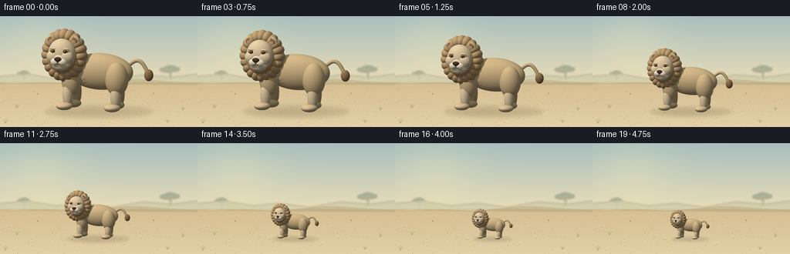
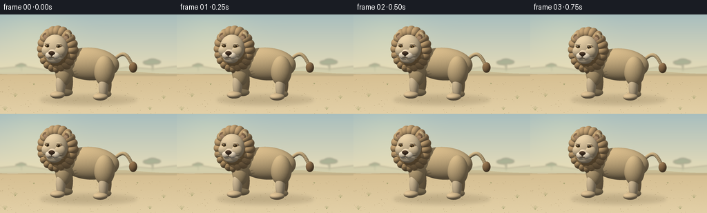

CODING AGENTS AS PIXEL WORLD MODELS
traex/GPT-6.1-Sol · instance_preservation_0052
点击播放 · 原生 RGB 像素
逐轮保存的候选
回放视频、检查图与代码变化。
每份候选均可单独播放。实际图片检查记录在下方工具轨迹中。
候选 01播放与检查图
点击播放 · 原生 RGB 像素


展开代码变化
--- 上一保存版本
+++ 本次保存版本
@@ -0,0 +1,233 @@
+"""Procedurally render one beige lion, then smoothly shrink that same instance.
+No source pictures or learned assets. Analytic ellipsoid ray tracing + Pillow.
+"""
+from pathlib import Path
+import math
+import numpy as np
+from PIL import Image, ImageDraw, ImageFilter
+import artifact_io
+
+ROOT=Path(__file__).resolve().parent
+W,H=256,144
+SS=4
+rng=np.random.default_rng(12)
+
+# All geometry uses metres, with y up and the face looking along +z.
+objects=[]
+def ell(c,r,color,rot=None,kind='fur'):
+ R=np.eye(3) if rot is None else np.array(rot)
+ objects.append((np.array(c,float),np.array(r,float),np.array(color,float)/255,R,kind))
+def segment(a,b,r,color,kind='fur'):
+ a,b=np.array(a,float),np.array(b,float)
+ v=b-a; length=np.linalg.norm(v); v/=length
+ u=np.cross(v,[0,0,1])
+ if np.linalg.norm(u)<.001: u=np.cross(v,[1,0,0])
+ u/=np.linalg.norm(u); w=np.cross(u,v)
+ ell((a+b)/2,[r,length/2+r,r],color,np.stack([u,v,w],axis=1),kind)
+
+fur=(207,178,129); lightfur=(225,200,158); paw=(216,187,141)
+mane=(167,132,84); manelight=(185,150,103)
+# Tail curves upward behind the body and ends in a darker rounded tuft.
+pts=[]
+for t in np.linspace(0,1,20):
+ pts.append([1.13+1.10*t-.35*t*t,1.25+.28*math.sin(t*math.pi*1.2),-.18-.05*t])
+for a,b in zip(pts,pts[1:]): segment(a,b,.061,fur)
+ell(pts[-1],[.14,.18,.13],(145,111,73))
+# Far feet and legs, followed by body and nearer legs.
+for x in [-.47,.91]:
+ ell([x,.49,-.30],[.17,.47,.17],(190,160,113))
+ ell([x-.055,.13,-.22],[.24,.13,.25],(201,175,128))
+ell([.39,1.16,-.08],[1.03,.56,.44],fur)
+ell([.98,.98,.15],[.36,.52,.33],fur)
+ell([-.47,.91,.15],[.30,.51,.28],fur)
+for x in [-.55,.98]:
+ ell([x,.45,.25],[.165,.42,.17],lightfur)
+ ell([x-.075,.115,.37],[.25,.125,.265],paw)
+ # Small inset toe creases.
+ for dx in [-.075,.045]:
+ segment([x+dx-.075,.16,.584],[x+dx-.075,.09,.604],.009,(161,130,87),'matte')
+# Mane: rounded central volume plus a ring of softly faceted locks.
+ell([-.66,1.62,.14],[.66,.72,.49],mane)
+for i in range(20):
+ a=2*math.pi*i/20
+ cx=-.66+.52*math.cos(a); cy=1.66+.61*math.sin(a)
+ direction=np.array([math.cos(a),math.sin(a),0.])
+ rot=np.array([[math.cos(a),-math.sin(a),0],[math.sin(a),math.cos(a),0],[0,0,1]])
+ col=np.array(manelight)+(math.sin(a)*6)
+ ell([cx,cy,.24],[.205,.17,.275],col,rot)
+# Top ear silhouettes, lighter rims, dark inner ears.
+for x in [-1.005,-.295]:
+ ell([x,2.115,.39],[.177,.187,.105],fur)
+ ell([x,2.12,.477],[.119,.126,.036],(135,105,75),'bad' if False else None,'matte')
+ ell([x,2.098,.500],[.084,.082,.019],(192,154,117),kind='matte')
+# Distinct cream-beige face, brow, cheeks and chin.
+ell([-.65,1.737,.48],[.437,.466,.35],lightfur)
+ell([-.65,1.405,.665],[.265,.169,.172],(230,207,169))
+for x in [-.86,-.44]:
+ ell([x,1.666,.703],[.218,.20,.16],lightfur)
+# Eyes are inset dark ovals, surrounded by pale eyelids. Brow curves soft expression.
+for x in [-.846,-.454]:
+ ell([x,1.84,.761],[.110,.095,.040],(187,152,105))
+ ell([x,1.834,.796],[.075,.063,.022],(47,35,23),kind='eye')
+ ell([x,1.834,.815],[.042,.049,.016],(151,109,45),kind='eye')
+ ell([x+.005,1.836,.830],[.019,.043,.009],(25,22,16),kind='eye')
+ ell([x-.018,1.858,.839],[.012,.013,.006],(255,248,222),kind='glint')
+ segment([x-.087,1.925,.766],[x+.075,1.920,.776],.030,lightfur)
+# Paired muzzle pads and a small leather nose.
+ell([-.65,1.588,.785],[.198,.16,.125],(233,210,175))
+for x in [-.76,-.54]:
+ ell([x,1.527,.843],[.144,.117,.107],(242,223,193))
+ell([-.65,1.618,.923],[.114,.071,.050],(68,48,33),kind='nose')
+ell([-.65,1.590,.932],[.070,.058,.031],(68,48,33),kind='nose')
+ell([-.674,1.645,.958],[.037,.012,.006],(121,92,69),kind='nose')
+segment([-.65,1.566,.951],[-.65,1.486,.948],.010,(80,60,41),'matte')
+for sign in [-1,1]:
+ segment([-.65,1.486,.949],[-.65+sign*.10,1.466,.930],.009,(106,82,55),'matte')
+ for j in range(3):
+ x=-.65+sign*(.088+.042*(j%2))
+ y=1.545-.035*j
+ ell([x,y,.943],[.010,.009,.004],(108,87,59),kind='matte')
+ # Tapered whiskers, not overlong or comic.
+ for j in range(3):
+ a=[-.65+sign*.145,1.55-.038*j,.908]
+ b=[-.65+sign*(.39+.02*j),1.56-.065*j,.913]
+ segment(a,b,.0036,(248,228,191),'matte')
+
+# Camera and rays. A high-resolution transparent render preserves detail while shrinking.
+RW,RH=1000,780
+camera=np.array([3.0,2.4,8.3]); target=np.array([.30,1.20,.1])
+fwd=(target-camera); fwd/=np.linalg.norm(fwd)
+right=np.cross(fwd,[0,1,0]); right/=np.linalg.norm(right)
+up=np.cross(right,fwd)
+worldwidth=4.1
+xx,yy=np.meshgrid((np.arange(RW)+.5-RW/2)*worldwidth/RW,(RH/2-np.arange(RH)-.5)*worldwidth/RW)
+orig=target+xx[...,None]*right+yy[...,None]*up-fwd*8
+orig=orig.reshape(-1,3); d=fwd
+N=len(orig)
+depth=np.full(N,np.inf); index=np.full(N,-1,np.int16)
+
+def intersect(O,D,c,r,R):
+ q=(O-c)@R/r
+ dr=np.array(D)@R/r
+ A=np.sum(dr*dr,axis=-1)
+ B=np.sum(q*dr,axis=-1)
+ C=np.sum(q*q,axis=-1)-1
+ disc=B*B-A*C
+ root=np.sqrt(np.maximum(disc,0))
+ t=(-B-root)/A
+ return np.where((disc>=0)&(t>1e-5),t,np.inf)
+
+for k,(c,r,col,R,kind) in enumerate(objects):
+ t=intersect(orig,d,c,r,R)
+ use=t<depth
+ depth[use]=t[use]; index[use]=k
+hit=index>=0
+P=orig[hit]+depth[hit,None]*d
+ids=index[hit]
+normal=np.zeros_like(P); albedo=np.zeros_like(P)
+rough=np.ones(len(P)); gloss=np.zeros(len(P))
+for k,(c,r,col,R,kind) in enumerate(objects):
+ use=ids==k
+ if not np.any(use): continue
+ local=(P[use]-c)@R
+ n=(local/(r*r))@R.T
+ n/=np.linalg.norm(n,axis=1)[:,None]
+ normal[use]=n
+ albedo[use]=col
+ if kind in ['eye','nose']: gloss[use]=.35 if kind=='eye' else .1
+ if kind=='glint': gloss[use]=.8
+ if kind=='fur':
+ # Small, deterministic fibres: very restrained, not noisy coat spots.
+ p=P[use]
+ noise=(np.sin(p[:,0]*121+p[:,1]*73)*np.sin(p[:,2]*131-p[:,1]*54))
+ albedo[use]*=(1+.015*noise[:,None])
+
+light=np.array([-3.,6.,6.]); light/=np.linalg.norm(light)
+# Cast shadows from all geometry, plus short-range ambient occlusion.
+blocked=np.zeros(len(P),bool)
+S=P+normal*.008
+for c,r,col,R,kind in objects:
+ t=intersect(S,light,c,r,R)
+ blocked|=np.isfinite(t)
+ndotl=np.maximum(normal@light,0)
+sky=.5+.5*normal[:,1]
+shade=.34+.18*sky+.55*ndotl*np.where(blocked,.16,1)
+# Approximate contact occlusion in normal direction, unobtrusive on smooth surfaces.
+ao=np.zeros(len(P))
+for c,r,col,R,kind in objects:
+ t=intersect(S,normal,c,r,R)
+ ao=np.maximum(ao,np.where(t<.28,1-t/.28,0))
+shade*=1-.21*ao
+halfv=light-d; halfv/=np.linalg.norm(halfv)
+specular=np.maximum(normal@halfv,0)**42*gloss
+rgb=np.clip(albedo*shade[:,None]+specular[:,None]*.8,0,1)
+# Warm film-like lighting, keeping a cream beige rather than saturated orange coat.
+rgb=np.power(rgb,1/1.08)
+out=np.zeros((N,4),np.uint8)
+out[hit,:3]=(rgb*255).astype(np.uint8); out[hit,3]=255
+sprite=Image.fromarray(out.reshape(RH,RW,4))
+bbox=sprite.getbbox(); sprite=sprite.crop(bbox)
+
+# Fixed sunny savannah clearing, softly atmospheric and out of focus in the distance.
+BW,BH=W*SS,H*SS
+Y,X=np.mgrid[0:BH,0:BW]; y=Y/SS; x=X/SS
+sky_top=np.array([168,190,190]); sky_bottom=np.array([239,224,183])
+a=np.clip(y/94,0,1)[...,None]
+bg=sky_top*(1-a)+sky_bottom*a
+sand0=np.array([213,190,145]); sand1=np.array([227,208,167])
+g=np.clip((y-85)/59,0,1)[...,None]
+ground=sand0*(1-g)+sand1*g
+line=85+2.2*np.sin(x/39)+1.1*np.cos(x/18)
+mask=y>line
+bg[mask]=ground[mask]
+# Soft sun glow and subtle surface variations.
+glow=np.exp(-((x-52)**2/2700+(y-28)**2/1800))[...,None]
+bg+=glow*np.array([12,9,1])
+noise=rng.normal(0,.6,(BH,BW,1)); bg+=noise*np.clip((y-85)/45,0,1)[...,None]
+background=Image.fromarray(np.clip(bg,0,255).astype(np.uint8)).convert('RGBA')
+# Low, distant hill layers.
+dist=Image.new('RGBA',(BW,BH)); dr=ImageDraw.Draw(dist)
+def poly(coords,fill): dr.polygon([(int(a*SS),int(b*SS)) for a,b in coords],fill=fill)
+poly([(0,86),(0,78),(35,75),(72,81),(106,78),(145,83),(185,76),(222,79),(256,75),(256,88)],(170,177,147,80))
+# A couple of far-off acacias are tiny and stationary.
+for tx,ty,s in [(221,82,.72),(31,82,.44)]:
+ dr.line([(tx*SS,ty*SS),(tx*SS,(ty-17*s)*SS)], fill=(110,126,102,115),width=max(1,int(2*s*SS)))
+ dr.line([(tx*SS,(ty-9*s)*SS),((tx-8*s)*SS,(ty-15*s)*SS)],fill=(110,126,102,115),width=max(1,int(s*SS)))
+ for ox,oy,rx,ry in [(-7,-17,12,4),(5,-18,11,4),(0,-20,10,4)]:
+ dr.ellipse(((tx+(ox-rx)*s)*SS,(ty+(oy-ry)*s)*SS,(tx+(ox+rx)*s)*SS,(ty+(oy+ry)*s)*SS),fill=(113,133,106,115))
+dist=dist.filter(ImageFilter.GaussianBlur(1.25*SS)); background=Image.alpha_composite(background,dist)
+# Sand specks, tiny stones, and grass tufts around the edges give an absolute scale.
+draw=ImageDraw.Draw(background)
+for i in range(170):
+ px=float(rng.uniform(0,W)); py=float(rng.uniform(94,144)); rr=float(rng.uniform(.13,.50))
+ color=(178,158,117,int(rng.integers(15,50)))
+ draw.ellipse(((px-rr)*SS,(py-rr*.35)*SS,(px+rr)*SS,(py+rr*.35)*SS),fill=color)
+for tx,ty,size in [(22,119,5.1),(237,122,4.8),(49,102,2.1),(199,101,2.0),(7,139,6),(217,138,4.5)]:
+ for off in [-.7,-.3,0,.4,.7]:
+ draw.line([(tx*SS,ty*SS),((tx+off*size)*SS,(ty-size*(1-abs(off)*.4))*SS)],fill=(137,145,92,160),width=max(1,int(.38*SS)))
+background=background.convert('RGB').convert('RGBA')
+
+frames=[]
+# Fixed camera and fixed feet anchor: the lion truly becomes smaller, not a camera zoom.
+initial_height=109
+anchor_x,anchor_y=126,125
+for i in range(20):
+ t=i/19
+ q=np.clip((t-.08)/.84,0,1)
+ smooth=q*q*(3-2*q)
+ scale=1-.65*smooth
+ canvas=background.copy()
+ sh=Image.new('RGBA',(BW,BH)); sd=ImageDraw.Draw(sh)
+ # Broad soft body shadow and tight contact shadow shrink along with the lion.
+ for rx,ry,opacity,dx,dy in [(70,8,35,2,-1),(44,4,50,-3,-.8),(56,2,52,0,0)]:
+ sd.ellipse(((anchor_x+(dx-rx)*scale)*SS,(anchor_y+(dy-ry)*scale)*SS,(anchor_x+(dx+rx)*scale)*SS,(anchor_y+(dy+ry)*scale)*SS),fill=(71,59,37,opacity))
+ sh=sh.filter(ImageFilter.GaussianBlur((1.1+1.3*scale)*SS))
+ canvas=Image.alpha_composite(canvas,sh)
+ ht=round(initial_height*scale*SS)
+ wt=round(ht*sprite.width/sprite.height)
+ lion=sprite.resize((wt,ht),Image.Resampling.LANCZOS)
+ canvas.alpha_composite(lion,(round(anchor_x*SS-wt/2),round(anchor_y*SS-ht)))
+ image=canvas.convert('RGB').resize((W,H),Image.Resampling.LANCZOS)
+ frames.append(np.array(image,dtype=np.uint8))
+artifact_io.save(np.stack(frames),ROOT)
+print('Saved 20 RGB frames at 256x144. Lion height: 109 -> 38 pixels.')
可观测工具轨迹
实际执行的命令与返回图片。
命令 1exit 0
/bin/bash -lc 'ls -la && cat prompt.txt && cat GENERATION_RULES.md && cat task_spec.json'
命令 2exit 0
/bin/bash -lc "cat artifact_io.py && python - <<'PY'
import PIL, numpy
print('Pillow',PIL.__version__)
PY"命令 3exit 0
/bin/bash -lc "cat > generate.py <<'PY'
\"\"\"Procedurally render one beige lion, then smoothly shrink that same instance.
No source pictures or learned assets. Analytic ellipsoid ray tracing + Pillow.
\"\"\"
from pathlib import Path
import math
import numpy as np
from PIL import Image, ImageDraw, ImageFilter
import artifact_io
ROOT=Path(__file__).resolve().parent
W,H=256,144
SS=4
rng=np.random.default_rng(12)
# All geometry uses metres, with y up and the face looking along +z.
objects=[]
def ell(c,r,color,rot=None,kind='fur'):
R=np.eye(3) if rot is None else np.array(rot)
objects.append((np.array(c,float),np.array(r,float),np.array(color,float)/255,R,kind))
def segment(a,b,r,color,kind='fur'):
a,b=np.array(a,float),np.array(b,float)
v=b-a; length=np.linalg.norm(v); v/=length
u=np.cross(v,[0,0,1])
if np.linalg.norm(u)<.001: u=np.cross(v,[1,0,0])
u/=np.linalg.norm(u); w=np.cross(u,v)
ell((a+b)/2,[r,length/2+r,r],color,np.stack([u,v,w],axis=1),kind)
fur=(207,178,129); lightfur=(225,200,158); paw=(216,187,141)
mane=(167,132,84); manelight=(185,150,103)
# Tail curves upward behind the body and ends in a darker rounded tuft.
pts=[]
for t in np.linspace(0,1,20):
pts.append([1.13+1.10*t-.35*t*t,1.25+.28*math.sin(t*math.pi*1.2),-.18-.05*t])
for a,b in zip(pts,pts[1:]): segment(a,b,.061,fur)
ell(pts[-1],[.14,.18,.13],(145,111,73))
# Far feet and legs, followed by body and nearer legs.
for x in [-.47,.91]:
ell([x,.49,-.30],[.17,.47,.17],(190,160,113))
ell([x-.055,.13,-.22],[.24,.13,.25],(201,175,128))
ell([.39,1.16,-.08],[1.03,.56,.44],fur)
ell([.98,.98,.15],[.36,.52,.33],fur)
ell([-.47,.91,.15],[.30,.51,.28],fur)
for x in [-.55,.98]:
ell([x,.45,.25],[.165,.42,.17],lightfur)
ell([x-.075,.115,.37],[.25,.125,.265],paw)
# Small inset toe creases.
for dx in [-.075,.045]:
segment([x+dx-.075,.16,.584],[x+dx-.075,.09,.604],.009,(161,130,87),'matte')
# Mane: rounded central volume plus a ring of softly faceted locks.
ell([-.66,1.62,.14],[.66,.72,.49],mane)
for i in range(20):
a=2*math.pi*i/20
cx=-.66+.52*math.cos(a); cy=1.66+.61*math.sin(a)
direction=np.array([math.cos(a),math.sin(a),0.])
rot=np.array([[math.cos(a),-math.sin(a),0],[math.sin(a),math.cos(a),0],[0,0,1]])
col=np.array(manelight)+(math.sin(a)*6)
ell([cx,cy,.24],[.205,.17,.275],col,rot)
# Top ear silhouettes, lighter rims, dark inner ears.
for x in [-1.005,-.295]:
ell([x,2.115,.39],[.177,.187,.105],fur)
ell([x,2.12,.477],[.119,.126,.036],(135,105,75),'bad' if False else None,'matte')
ell([x,2.098,.500],[.084,.082,.019],(192,154,117),kind='matte')
# Distinct cream-beige face, brow, cheeks and chin.
ell([-.65,1.737,.48],[.437,.466,.35],lightfur)
ell([-.65,1.405,.665],[.265,.169,.172],(230,207,169))
for x in [-.86,-.44]:
ell([x,1.666,.703],[.218,.20,.16],lightfur)
# Eyes are inset dark ovals, surrounded by pale eyelids. Brow curves soft expression.
for x in [-.846,-.454]:
ell([x,1.84,.761],[.110,.095,.040],(187,152,105))
ell([x,1.834,.796],[.075,.063,.022],(47,35,23),kind='eye')
ell([x,1.834,.815],[.042,.049,.016],(151,109,45),kind='eye')
ell([x+.005,1.836,.830],[.019,.043,.009],(25,22,16),kind='eye')
ell([x-.018,1.858,.839],[.012,.013,.006],(255,248,222),kind='glint')
segment([x-.087,1.925,.766],[x+.075,1.920,.776],.030,lightfur)
# Paired muzzle pads and a small leather nose.
ell([-.65,1.588,.785],[.198,.16,.125],(233,210,175))
for x in [-.76,-.54]:
ell([x,1.527,.843],[.144,.117,.107],(242,223,193))
ell([-.65,1.618,.923],[.114,.071,.050],(68,48,33),kind='nose')
ell([-.65,1.590,.932],[.070,.058,.031],(68,48,33),kind='nose')
ell([-.674,1.645,.958],[.037,.012,.006],(121,92,69),kind='nose')
segment([-.65,1.566,.951],[-.65,1.486,.948],.010,(80,60,41),'matte')
for sign in [-1,1]:
segment([-.65,1.486,.949],[-.65+sign*.10,1.466,.930],.009,(106,82,55),'matte')
for j in range(3):
x=-.65+sign*(.088+.042*(j%2))
y=1.545-.035*j
ell([x,y,.943],[.010,.009,.004],(108,87,59),kind='matte')
# Tapered whiskers, not overlong or comic.
for j in range(3):
a=[-.65+sign*.145,1.55-.038*j,.908]
b=[-.65+sign*(.39+.02*j),1.56-.065*j,.913]
segment(a,b,.0036,(248,228,191),'matte')
# Camera and rays. A high-resolution transparent render preserves detail while shrinking.
RW,RH=1000,780
camera=np.array([3.0,2.4,8.3]); target=np.array([.30,1.20,.1])
fwd=(target-camera); fwd/=np.linalg.norm(fwd)
right=np.cross(fwd,[0,1,0]); right/=np.linalg.norm(right)
up=np.cross(right,fwd)
worldwidth=4.1
xx,yy=np.meshgrid((np.arange(RW)+.5-RW/2)*worldwidth/RW,(RH/2-np.arange(RH)-.5)*worldwidth/RW)
orig=target+xx[...,None]*right+yy[...,None]*up-fwd*8
orig=orig.reshape(-1,3); d=fwd
N=len(orig)
depth=np.full(N,np.inf); index=np.full(N,-1,np.int16)
def intersect(O,D,c,r,R):
q=(O-c)@R/r
dr=np.array(D)@R/r
A=np.sum(dr*dr,axis=-1)
B=np.sum(q*dr,axis=-1)
C=np.sum(q*q,axis=-1)-1
disc=B*B-A*C
root=np.sqrt(np.maximum(disc,0))
t=(-B-root)/A
return np.where((disc>=0)&(t>1e-5),t,np.inf)
for k,(c,r,col,R,kind) in enumerate(objects):
t=intersect(orig,d,c,r,R)
use=t<depth
depth[use]=t[use]; index[use]=k
hit=index>=0
P=orig[hit]+depth[hit,None]*d
ids=index[hit]
normal=np.zeros_like(P); albedo=np.zeros_like(P)
rough=np.ones(len(P)); gloss=np.zeros(len(P))
for k,(c,r,col,R,kind) in enumerate(objects):
use=ids==k
if not np.any(use): continue
local=(P[use]-c)@R
n=(local/(r*r))@R.T
n/=np.linalg.norm(n,axis=1)[:,None]
normal[use]=n
albedo[use]=col
if kind in ['eye','nose']: gloss[use]=.35 if kind=='eye' else .1
if kind=='glint': gloss[use]=.8
if kind=='fur':
# Small, deterministic fibres: very restrained, not noisy coat spots.
p=P[use]
noise=(np.sin(p[:,0]*121+p[:,1]*73)*np.sin(p[:,2]*131-p[:,1]*54))
albedo[use]*=(1+.015*noise[:,None])
light=np.array([-3.,6.,6.]); light/=np.linalg.norm(light)
# Cast shadows from all geometry, plus short-range ambient occlusion.
blocked=np.zeros(len(P),bool)
S=P+normal*.008
for c,r,col,R,kind in objects:
t=intersect(S,light,c,r,R)
blocked|=np.isfinite(t)
ndotl=np.maximum(normal@light,0)
sky=.5+.5*normal[:,1]
shade=.34+.18*sky+.55*ndotl*np.where(blocked,.16,1)
# Approximate contact occlusion in normal direction, unobtrusive on smooth surfaces.
ao=np.zeros(len(P))
for c,r,col,R,kind in objects:
t=intersect(S,normal,c,r,R)
ao=np.maximum(ao,np.where(t<.28,1-t/.28,0))
shade*=1-.21*ao
halfv=light-d; halfv/=np.linalg.norm(halfv)
specular=np.maximum(normal@halfv,0)**42*gloss
rgb=np.clip(albedo*shade[:,None]+specular[:,None]*.8,0,1)
# Warm film-like lighting, keeping a cream beige rather than saturated orange coat.
rgb=np.power(rgb,1/1.08)
out=np.zeros((N,4),np.uint8)
out[hit,:3]=(rgb*255).astype(np.uint8); out[hit,3]=255
sprite=Image.fromarray(out.reshape(RH,RW,4))
bbox=sprite.getbbox(); sprite=sprite.crop(bbox)
# Fixed sunny savannah clearing, softly atmospheric and out of focus in the distance.
BW,BH=W*SS,H*SS
Y,X=np.mgrid[0:BH,0:BW]; y=Y/SS; x=X/SS
sky_top=np.array([168,190,190]); sky_bottom=np.array([239,224,183])
a=np.clip(y/94,0,1)[...,None]
bg=sky_top*(1-a)+sky_bottom*a
sand0=np.array([213,190,145]); sand1=np.array([227,208,167])
g=np.clip((y-85)/59,0,1)[...,None]
ground=sand0*(1-g)+sand1*g
line=85+2.2*np.sin(x/39)+1.1*np.cos(x/18)
mask=y>line
bg[mask]=ground[mask]
# Soft sun glow and subtle surface variations.
glow=np.exp(-((x-52)**2/2700+(y-28)**2/1800))[...,None]
bg+=glow*np.array([12,9,1])
noise=rng.normal(0,.6,(BH,BW,1)); bg+=noise*np.clip((y-85)/45,0,1)[...,None]
background=Image.fromarray(np.clip(bg,0,255).astype(np.uint8)).convert('RGBA')
# Low, distant hill layers.
dist=Image.new('RGBA',(BW,BH)); dr=ImageDraw.Draw(dist)
def poly(coords,fill): dr.polygon([(int(a*SS),int(b*SS)) for a,b in coords],fill=fill)
poly([(0,86),(0,78),(35,75),(72,81),(106,78),(145,83),(185,76),(222,79),(256,75),(256,88)],(170,177,147,80))
# A couple of far-off acacias are tiny and stationary.
for tx,ty,s in [(221,82,.72),(31,82,.44)]:
dr.line([(tx*SS,ty*SS),(tx*SS,(ty-17*s)*SS)], fill=(110,126,102,115),width=max(1,int(2*s*SS)))
dr.line([(tx*SS,(ty-9*s)*SS),((tx-8*s)*SS,(ty-15*s)*SS)],fill=(110,126,102,115),width=max(1,int(s*SS)))
for ox,oy,rx,ry in [(-7,-17,12,4),(5,-18,11,4),(0,-20,10,4)]:
dr.ellipse(((tx+(ox-rx)*s)*SS,(ty+(oy-ry)*s)*SS,(tx+(ox+rx)*s)*SS,(ty+(oy+ry)*s)*SS),fill=(113,133,106,115))
dist=dist.filter(ImageFilter.GaussianBlur(1.25*SS)); background=Image.alpha_composite(background,dist)
# Sand specks, tiny stones, and grass tufts around the edges give an absolute scale.
draw=ImageDraw.Draw(background)
for i in range(170):
px=float(rng.uniform(0,W)); py=float(rng.uniform(94,144)); rr=float(rng.uniform(.13,.50))
color=(178,158,117,int(rng.integers(15,50)))
draw.ellipse(((px-rr)*SS,(py-rr*.35)*SS,(px+rr)*SS,(py+rr*.35)*SS),fill=color)
for tx,ty,size in [(22,119,5.1),(237,122,4.8),(49,102,2.1),(199,101,2.0),(7,139,6),(217,138,4.5)]:
for off in [-.7,-.3,0,.4,.7]:
draw.line([(tx*SS,ty*SS),((tx+off*size)*SS,(ty-size*(1-abs(off)*.4))*SS)],fill=(137,145,92,160),width=max(1,int(.38*SS)))
background=background.convert('RGB').convert('RGBA')
frames=[]
# Fixed camera and fixed feet anchor: the lion truly becomes smaller, not a camera zoom.
initial_height=109
anchor_x,anchor_y=126,125
for i in range(20):
t=i/19
q=np.clip((t-.08)/.84,0,1)
smooth=q*q*(3-2*q)
scale=1-.65*smooth
canvas=background.copy()
sh=Image.new('RGBA',(BW,BH)); sd=ImageDraw.Draw(sh)
# Broad soft body shadow and tight contact shadow shrink along with the lion.
for rx,ry,opacity,dx,dy in [(70,8,35,2,-1),(44,4,50,-3,-.8),(56,2,52,0,0)]:
sd.ellipse(((anchor_x+(dx-rx)*scale)*SS,(anchor_y+(dy-ry)*scale)*SS,(anchor_x+(dx+rx)*scale)*SS,(anchor_y+(dy+ry)*scale)*SS),fill=(71,59,37,opacity))
sh=sh.filter(ImageFilter.GaussianBlur((1.1+1.3*scale)*SS))
canvas=Image.alpha_composite(canvas,sh)
ht=round(initial_height*scale*SS)
wt=round(ht*sprite.width/sprite.height)
lion=sprite.resize((wt,ht),Image.Resampling.LANCZOS)
canvas.alpha_composite(lion,(round(anchor_x*SS-wt/2),round(anchor_y*SS-ht)))
image=canvas.convert('RGB').resize((W,H),Image.Resampling.LANCZOS)
frames.append(np.array(image,dtype=np.uint8))
artifact_io.save(np.stack(frames),ROOT)
print('Saved 20 RGB frames at 256x144. Lion height: 109 -> 38 pixels.')
PY
OPENBLAS_NUM_THREADS=1 python generate.py"命令 4exit 0
/bin/bash -lc "python - <<'PY'
from pathlib import Path
import numpy as np
from PIL import Image
p=Path('.')
z=np.load(p/'pixels.npz')['pixels']
assert z.shape==(144,256,20)
assert len(list((p/'frames').glob('*.png')))==20
for f in (p/'frames').glob('*.png'):
im=Image.open(f); assert im.mode=='RGB' and im.size==(256,144)
assert (p/'index.html').is_file()
print('Validated all frames and playback artifacts.')
PY
command -v ffmpeg || true"保存候选 1 份；完成命令 4 次；可验证图片返回 0 张。原始 API 响应与完整日志保留在本地。